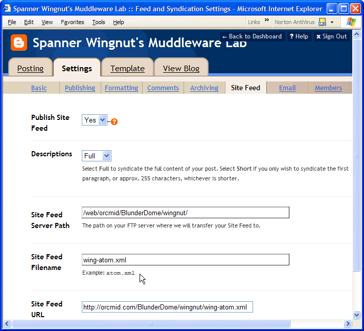
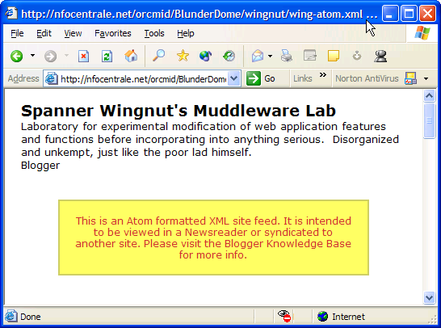
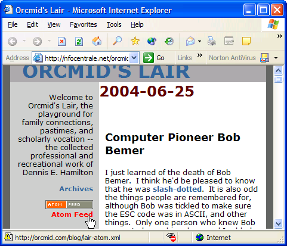
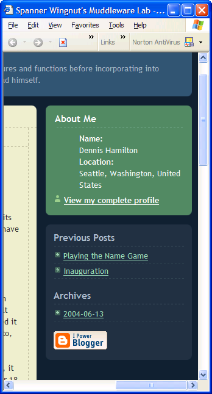
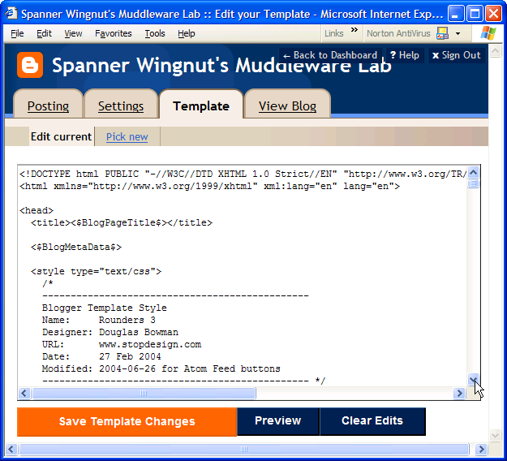
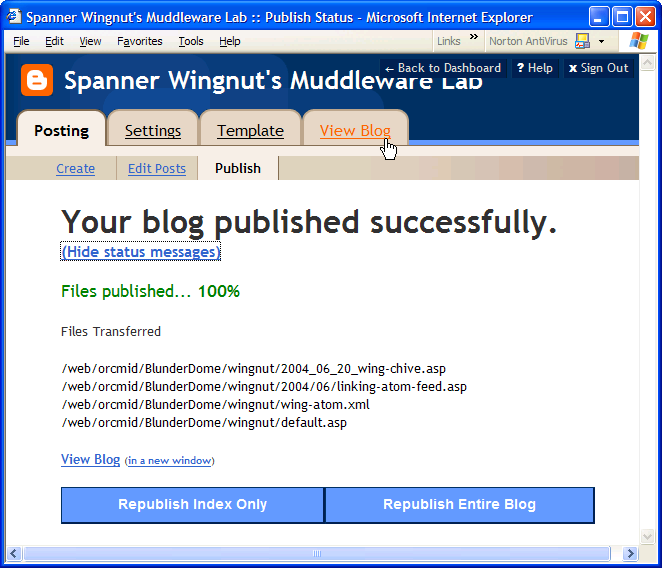
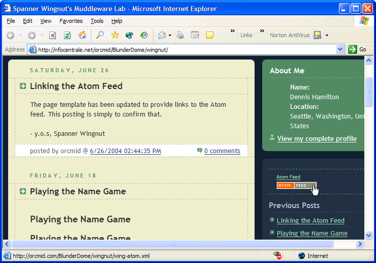

BlunderLab
Notebook
B040603
Atom Feed Me, Feed Me
|
|
BlunderLab
Notebook
B040603 |
This is provisional material on hooking up an atom feed with Blogger.
Look up Version of Blogger this applies to, point out this applies to a blog that is published via FTP setup, not on Blogspot.
Specify the Feed in the Setup of Your Blog, if you haven't already

Verify that the feed is present.
Go to the identified URL, such as http://orcmid.com/BlunderDome/wingnut/wing-atom.xml
Show what it looks like in browser if the XSL is honored

Show what it looks like if it is not that, and how to get it if there is a problem (after the button is there)
<?xml version="1.0" encoding="UTF-8" standalone="yes"?>
<?xml-stylesheet href="http://www.blogger.com/styles/atom.css" type="text/css"?>
<feed version="0.3" xmlns="http://purl.org/atom/ns#">
<link href="http://www.blogger.com/atom/7350804"
rel="service.post"
title="Spanner Wingnut's Muddleware Lab" type="application/x.atom+xml"/>
<link href="http://www.blogger.com/atom/7350804"
rel="service.feed"
title="Spanner Wingnut's Muddleware Lab" type="application/x.atom+xml"/>
<title mode="escaped" type="text/html">Spanner Wingnut's Muddleware Lab</title>
<!-- dh:2004-06-26-12:48 Additional Material omitted ... -->
<entry>
<link href="http://www.blogger.com/atom/7350804/108760589802570863"
rel="service.edit"
title="Playing the Name Game" type="application/x.atom+xml"/>
<!-- dh:2004-06-26-12:48 Even More Material omitted ... -->
</entry>
</feed>
For a button, need to have the image in a place where it can be used easily by absolute URL:
Figure out where you want to put it.

Why I like it there.
Here is the text:
<a href="http://orcmid.com/blog/lair-atom.xml" target="_top">
<img border="0" src="http://orcmid.com/blog/atom-feed.bmp"
alt="Click for Atom feed" />
</a>
<br />
<a href="http://orcmid.com/blog/lair-atom.xml" title="Atom feed">Atom Feed</a>
The initial customization for the Muddleware site is
<a href="http://orcmid.com/BlunderDome/wingnut/wing-atom.xml" target="_top">
<img border="0" src="http://orcmid.com/blog/atom-feed.bmp"
alt="Click for Atom feed" />
</a>
<br />
<a href="http://orcmid.com/BlunderDome/wingnut/wing-atom.xml"
title="Click for Atom feed">Atom Feed</a>
Where I want to put it on my page:

Because it is a small, fixed amount of material that I don't want people to have to hunt for, I am going to put it above the "Previous Posts" lists in the same block.
Find your template:

I added the Modification line to show that I am changing this template. I will also back it up and do some other things. But this time,
Find the place where the sidebar begins. For this Rounders template, it will be like this (with many blank lines deleted to make it easier), almost at the end of the template:
<!-- Begin #sidebar -->
<div id="sidebar">
<!-- Begin #profile-container -->
<$BlogMemberProfile$>
<!-- End #profile -->
<!-- Begin .box -->
<div class="box"><div class="box2"><div class="box3">
<h2 class="sidebar-title">Previous Posts</h2>
<ul id="recently">
<BloggerPreviousItems>
<li><a href="<$BlogItemPermalinkURL$>"><$BlogPreviousItemTitle$></a></li>
</BloggerPreviousItems>
</ul>
This is exactly what we are looking for. I insert my changes right before the Previous Posts title. Using the Preview button, and moving material around to eliminate insertion of spaces and also appear the way I want, I finally arrive at the following insertions to the template:
<!-- Begin .box -->
<div class="box"><div
class="box2"><div class="box3">
<blockquote><!-- 2004-06-26-14:40 Add Atom Feed links to sidebar --><a
href="http://orcmid.com/BlunderDome/wingnut/wing-atom.xml"
title="Click for Atom feed"><small>Atom Feed</small></a><br />
<a href="http://orcmid.com/BlunderDome/wingnut/wing-atom.xml" target="_top">
<img border="0" src="http://orcmid.com/blog/atom-feed.bmp"
alt="Click for Atom feed" />
</a><br />
</blockquote>
<h2 class="sidebar-title">Previous Posts</h2>
<ul id="recently">
<BloggerPreviousItems>
<li><a href="<$BlogItemPermalinkURL$>"><$BlogPreviousItemTitle$></a></li>
</BloggerPreviousItems>
</ul>
I apply the changes. I do not do anything to republish the site. Instead, I simply create a new post, a short one, and post it. Make a page that describes what you did and post it I check the details and notice what files have been created or updated as a result:

Then I view the blog and see that the note is there and there is now an Atom Feed link and a button on the sidebar:

Look for the button and link on your "current" page. Try both of them from there -- you should see the message i in your browser (see above)
Look for the button on the archive page. It should work just like on the current page.
Got to the separate posting of the new article and see if the link and button are there.
|
|
You are navigating Orcmid's Lair |
created 2004-06-26-11:28 -0700 (pdt) by orcmid |